Arq. Ángel Martínez
Levantamientos topográficos, curvas de nivel, deslindes, lotificación, replanteo y georreferenciación de terrenos en León, Guanajuato — planos listos para trámite, con la precisión que exige el campo.
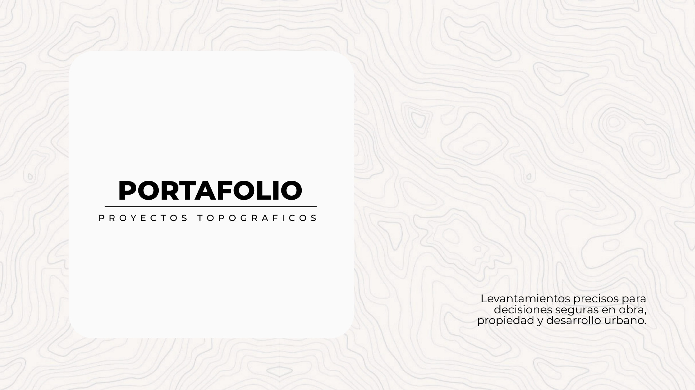
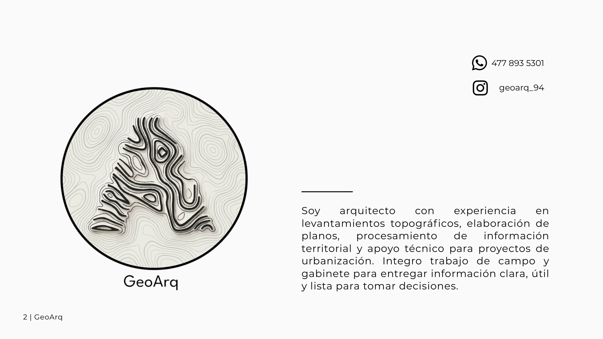
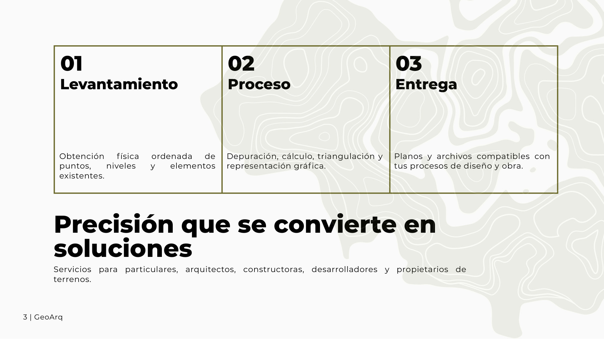
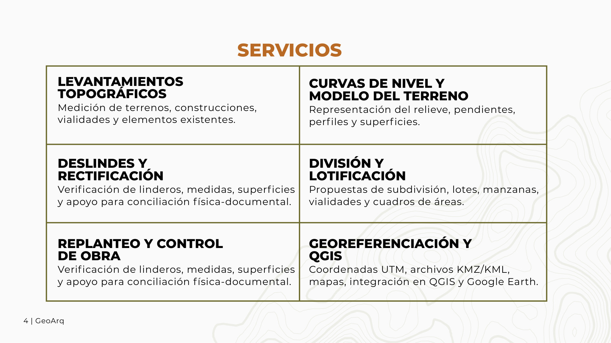
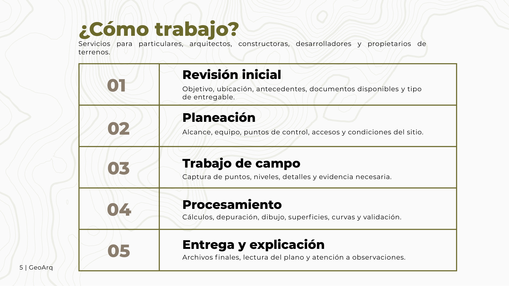
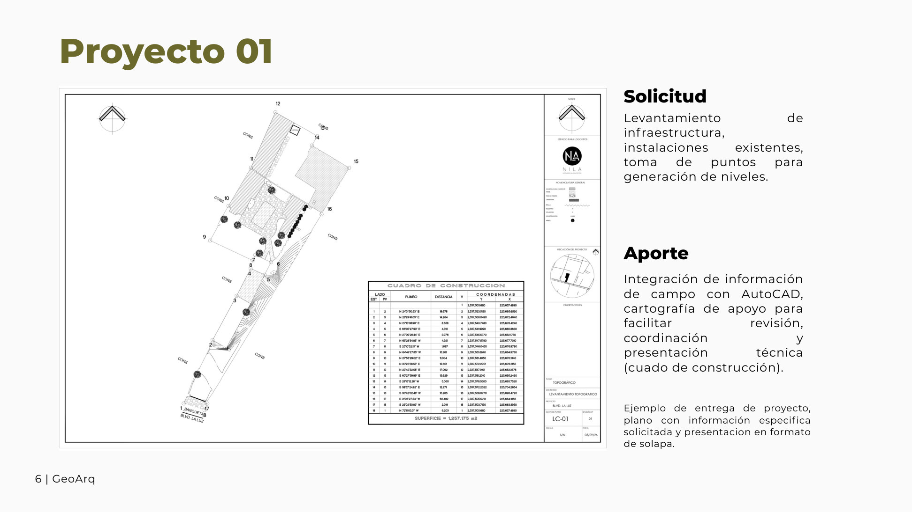
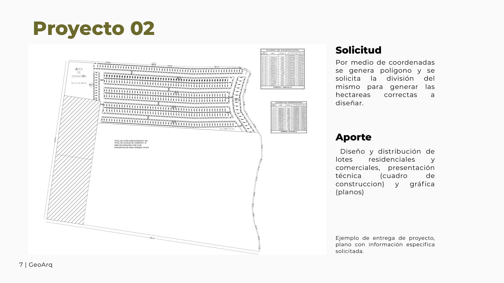
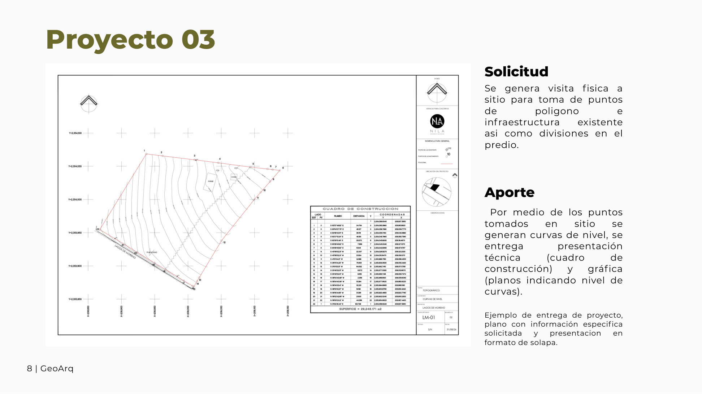
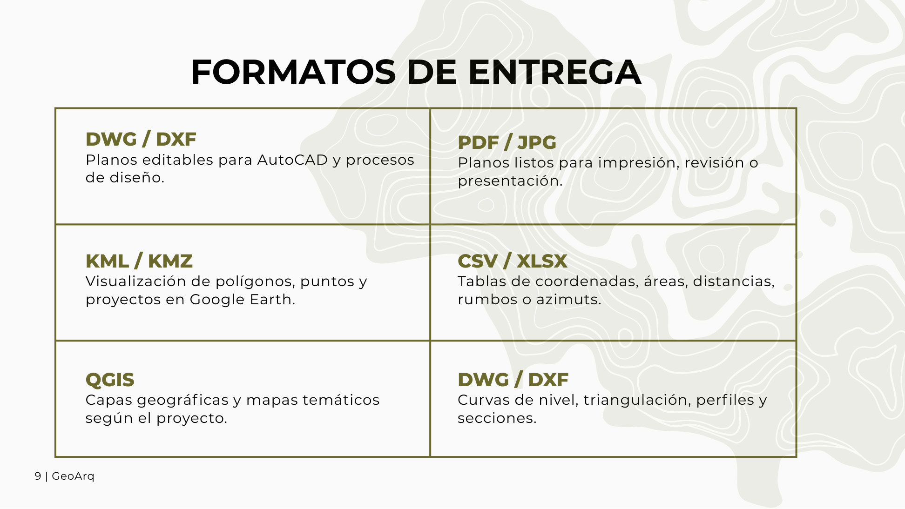
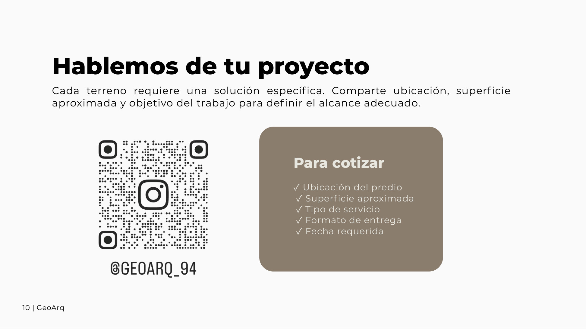
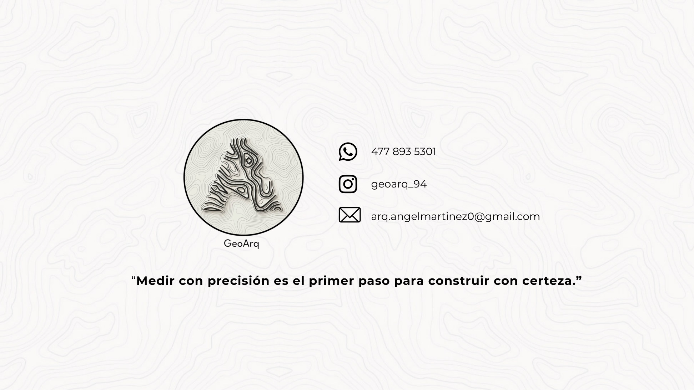